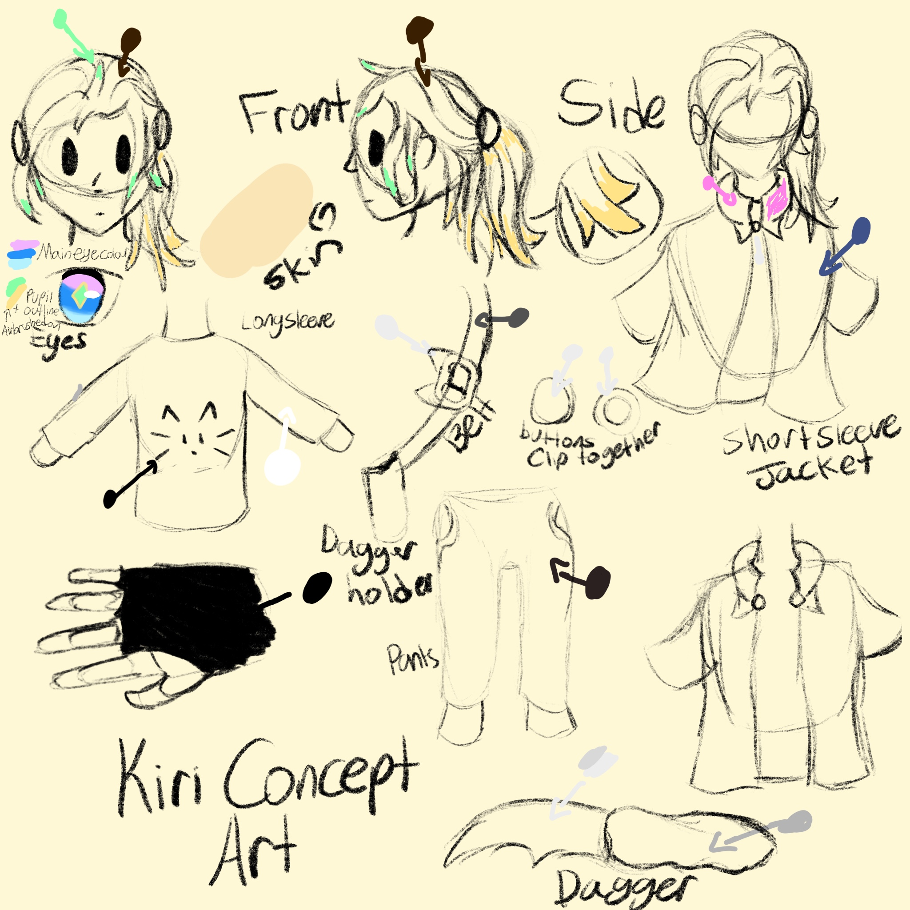

Kiri
Short, evil gremlin. She's an amazing height of 159cm, 21 years old (although she does not act it), and has an unhealthy obsession with daggers.
Why daggers, you ask? Well they're my favourite type of blade. Easy to conceal, great for stabbing.
Kiri is chaotic, silly, and represents me online.
If seen in any artwork she smiles like she's clinically ill. This does not mean she is always happy, per se, but it does mean she looks happy or is attempting to appear happy. Under her cheerful demeanor is a calculative soul that analyses people.
Kiri is not oblivious to the world, and not actually clinically ill. She's just chaotic. Except this harsh personality has caused her to struggle with finding friends.